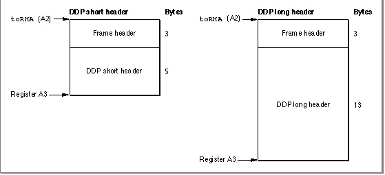
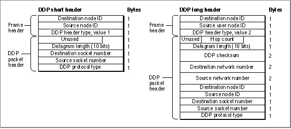

Legacy Document
Important: The information in this document is obsolete and should not be used for new development.
Important: The information in this document is obsolete and should not be used for new development.


Using Registers and Packet Headers
To receive data at the DDP level, you need to include as part of your socket-client application a socket listener that reads packets addressed to your application and passes them to the application for further processing. DDP maintains a table with an entry
for each socket and socket listener pair.When the .MPP driver receives a packet addressed to your socket-client application, it calls your socket listener, using the CPU's registers to pass pointers to the internal buffer where it has stored the packet's headers and to some data values that your socket listener uses during its processing.
The CPU's registers that the .MPP driver uses to pass parameters to your socket listener are not directly accessible from Pascal. Because a DDP socket listener must read from and write to the CPU's registers, you must write a socket listener in assembly language; you cannot use Pascal. However, you can write the remainder of the client application that includes the socket listener in a high-level language such as Pascal. The client application sample code that this chapter shows is written in the Pascal language.
How the .MPP Driver Calls Your Socket Listener
When a frame addressed to a particular node arrives at that node and the frame contains a DDP packet, the node's CPU is interrupted and the link-access protocol calls the .MPP driver to receive the packet. When the .MPP driver receives a DDP packet, it reads the first 3 bytes of the frame header into an internal buffer called the read-header area (RHA). After the frame header is read into the RHA, 8 bytes of the RHA are still available for your use.Next, the .MPP driver reads the socket address and calls the socket listener for that socket. The .MPP driver uses the CPU's registers to pass parameters to your socket listener as follows:
Registers on call to DDP socket listener A0 Reserved for internal use by the .MPP driver. You must preserve this register until after the ReadRestroutine has completed execution.A1 Reserved for internal use by the .MPP driver. You must preserve this register until after the ReadRestroutine has completed execution.A2 Pointer to the .MPP driver's local variables. The value at the offset toRHAfrom the value in the A2 register points to the start of the RHA.A3 Pointer to the first byte in the RHA past the DDP header bytes (the first byte after the DDP protocol type field). A4 Pointer to the ReadPacketroutine. TheReadRestroutine starts 2 bytes after the start of theReadPacketroutine.A5 Free for your use before and until your socket listener calls
theReadRestroutine.D0 Lower byte is the destination socket number of the packet. D1 Word indicating the number of bytes in the DDP packet left to be read (that is,
the number of bytes following the DDP header).D2 Free for your use. D3 Free for your use. When the .MPP driver calls your socket listener, you can read the destination socket number that is in the D0 register and the frame header that is in the RHA. You should assume that only 8 bytes are still available in the RHA for your use. Figure 7-5 shows the beginning of the RHA where the frame header begins; the frame header is followed by either a short or a long DDP header.
The DDP Packet and Frame Headers
A DDP packet includes a packet header followed by data. The DDP packet header is preceded by the frame header. Figure 7-6 shows both headers; they do not include the data portion. The DDP packet header can be long or short; if the destination and source network numbers are different, DDP uses a long header, which includes some additional fields.The frame header includes
Figure 7-5 The RHA for both long and short DDP headers
- the source and destination node IDs
- the DDP header type (1 = short, 2 = long)

Figure 7-6 Data-link frame header and DDP packet header

The DDP long and short packet headers have these fields in common:
A long DDP packet header also includes
- the datagram length (10 bits)
- the destination socket number
- the source socket number
- the DDP protocol type
- a hop count
- a checksum value, if one was calculated
- the source network number and node ID
- the destination network number and node ID
The MPW Equates
You can use the following equates from the MPW interface files in writing your socket listener process and the client application that includes it:
;frame header ; lapDstAdr EQU 0 ;destination node address [byte] lapSrcAdr EQU 1 ;source node address [byte] lapType EQU 2 ;LAP type field [byte] lapHdSz EQU 3 ;size of LAP header ;DDP packet header ; ddpHopCnt EQU 0 ;hop count (only used in long ; header) [byte] ddpLength EQU 0 ;packet length (from this word ; onward) [word] ddpChecksum EQU 2 ;checksum [word] ddpDstNet EQU 4 ;destination network no. [word] ddpSrcNet EQU 6 ;network of origin [word] ddpDstNode EQU 8 ;destination node address [byte] ddpSrcNode EQU 9 ;node of origin [byte] ddpDstSkt EQU 10 ;destination socket number [byte] ddpSrcSkt EQU 11 ;source socket number [byte] ddpType EQU 12 ;DDP protocol type field [byte] sddpDstSkt EQU 2 ;destination socket number (short ; header) [byte] sddpSrcSkt EQU 3 ;source socket number (short ; header) [byte] sddpType EQU 4 ;DDP protocol type field (short header) ; [byte] ; ddphSzLong EQU 13 ;size of extended DDP header ddphSzShort EQU 5 ;size of short DDP header ; shortDDP EQU $01 ;LAP type code for DDP (short header) longDDP EQU $02 ;LAP type code for DDP (long header)Reading an Incoming Packet
Your socket listener calls theReadPacketandReadRestprocesses to read the incoming data packet. You can callReadPacketas many times as you like to read the data piece by piece into one or more data buffers, but you must always useReadRestto read the final piece of the data packet. Alternatively, you can read all of the data using onlyReadRest. TheReadRestroutine restores the machine state (the stack pointers, status register, and so forth) and checks for error conditions.
Before you call the
- Note
- You can ignore any remaining data instead of reading it
by setting the D3 register to 0 and callingReadRest.
ReadPacketroutine, you must allocate memory for a data buffer and place a pointer to the buffer in the A3 register. You must also place the number of bytes you want to read in the D3 register. You must not request more bytes than remain in the data packet.The buffer that you allocate must be large enough to hold all of the data and--if your socket listener places the packet header in the buffer--the header as well. The maximum amount of data in a DDP data packet is 586 bytes. A long DDP packet header is 13 bytes long; a short header is 5 bytes. The frame header is 3 bytes. Therefore, the maximum amount of data from the packet that the socket listener can return is 602 bytes. You can use the buffer as a data structure to hold other information as well, such as the number of bytes of data actually read by the socket listener, a flag that indicates when the data has been returned, and result codes.
After you have called the
ReadRestroutine, you can use registers A0 through A3 and D0 through D3 for your own use, but you must preserve all other registers. You cannot depend on having access to your application's global variables.To call the
ReadPacketroutine, execute a JSR instruction to the address in the A4 register. TheReadPacketroutine uses the registers as follows:
Registers on entry to the ReadPacketroutineA3 Pointer to a buffer to hold the data you want to read D3 Number of bytes to read; must be nonzero
Registers on exit from the ReadPacketroutineA0 Unchanged A1 Unchanged A2 Unchanged A3 Address of the first byte after the last byte read into buffer A4 Unchanged D0 Changed D1 Number of bytes left to be read D2 Unchanged D3 Equals 0 if requested number of bytes were read, nonzero if error After every time you call
ReadPacketorReadRest, you must check the zero (z) flag
in the status register for errors because theReadPacketroutine indicates an error
by clearing it to 0. If theReadPacketroutine returns an error, you must terminate execution of your socket listener with an RTS instruction without callingReadPacketagain or callingReadRestat all.Call the
ReadRestroutine to read the last portion of the data packet, or call it after
you have read all the data withReadPacketroutines and before you do any other processing or terminate execution. After you call theReadRestroutine, you must terminate execution of your socket listener with an RTS instruction whether or not theReadRestroutine returns an error.When you call the
ReadRestroutine, you must provide in the A3 register a pointer to
a data buffer and must indicate in the D3 register the size of the data buffer. If you
have already read all of the data with calls to theReadPacketroutine, specify a buffer of size 0.
To call the
- WARNING
- If you do not call the
ReadRestroutine after the last time you call theReadPacketroutine successfully, the system will crash. You do not need to call theReadPacketroutine; you can call only theReadRestroutine to read in the entire packet. However, you must call theReadRestroutine.
ReadRestroutine, execute a JSR instruction to an address 2 bytes past the address in the A4 register. TheReadRestroutine uses the registers as follows:
Registers on entry to the ReadRestroutineA3 Pointer to a buffer to hold the data you want to read D3 Size of the buffer (word length); may be 0
Registers on exit from the ReadRestroutineA0 Unchanged A1 Unchanged A2 Unchanged A3 Pointer to first byte after the last byte read into buffer D0 Changed D1 Changed D2 Unchanged D3 Equals 0 if requested number of bytes exactly equaled the size of the buffer;
less than 0 if more data was left than would fit in buffer (extra data equals -D3 bytes); greater than 0 if less data was left than the size of the buffer (extra buffer space equals D3 bytes)
In implementing your socket listener, you can use the registers as follows:
- Calling
ReadPacketandReadRestwhen LocalTalk is the data link- If LocalTalk is the data link that is being used, your socket listener
has less than 95 microseconds (best case) to read more data with aReadPacketorReadRestcall. If you need more time, you can read another 3 bytes into the RHA, which will allow you an additional
95 microseconds.
- You can use registers D0, D2, and D3 freely throughout the socket listener code.
- You must preserve the contents of registers A6 and D4 to D7.
- From entry to your socket listener until you call
ReadRest
- you can use A5 register
- you must preserve registers A0 to A2, A4, and D1
- From
ReadRestuntil your application exits from the socket listener
Using Checksums
For packets that include a long header, DDP includes a checksum feature that you can use to verify that the packet data has not been corrupted by memory or data bus errors within routers on the internet.When you use the
PWriteDDPfunction to send a DDP packet across an AppleTalk internet, you can set a flag (checksumFlag) to direct DDP to calculate a checksum
for the packet.If the checksum flag is set and the socket to which you are sending the packet (the destination socket) has a network number that is different from that of the socket from which you are sending the packet (the source socket), then the
PWriteDDPfunction calculates a checksum for the datagram and includes it in the datagram packet header. In this case, DDP uses a long header for the packet; Figure 7-6 on page 7-15 shows both the long and short DDP headers.When your socket listener receives a packet that has a long header, the socket listener must determine whether DDP calculated a checksum for the packet, and if so, use the checksum to verify that the data was delivered intact. You can use the equates from the MPW interface files in calculating checksums: see "The MPW Equates" on page 7-16.
To determine this, your socket listener code should take the following steps:
- Check the DDP header type field. This is set to 2 for a packet with a long header and 1 for a packet with a short header.
- Check the checksum field (
checksumFlag). This is set to a nonzero value if the sender specified that DDP should calculate a checksum for the packet; a short header does not include a checksum field.- Calculate the checksum using the following algorithm to calculate the checksum, starting with the byte immediately following the checksum field in the header and ending with the last data byte:
checksum := checksum + next byte; {unsigned addition}
Rotate the most significant bit to the least significant bit
Repeat- Compare the calculated checksum against the value set in the checksum field of the DDP packet header.
You can use the equates from the MPW interface files in calculating checksums: see "The MPW Equates" on page 7-16.